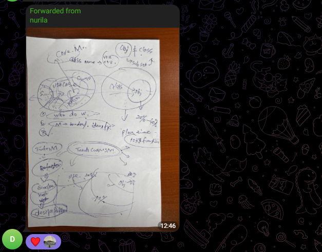
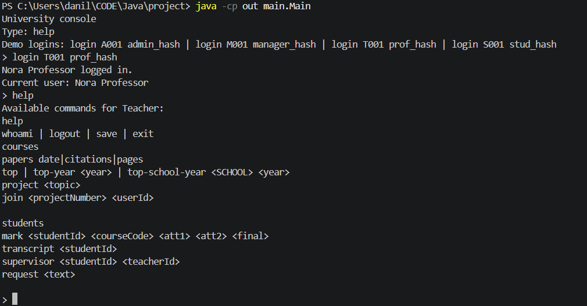

4. UML Diagrams
4.1 Class Diagram

The class diagram shows packages, inheritance, interface implementation, composition, dependencies, repository relationships, comparators, enums, and custom exceptions.
University System: users, courses, grading, research, news, authentication, and persistence.
This report documents a Java-based university management system developed with object-oriented programming principles. The system models students, teachers, managers, administrators, courses, transcripts, marks, research activities, news notifications, employee requests, authentication, and serialized persistence.
The application uses a clear package structure: domain entities are stored in model,
enumerations in enums, custom checked exceptions in exceptions, business
services and comparators in service, and centralized persistence in
repository. UML diagrams are included to show static relationships, runtime object
examples, and use-case behavior.
database.ser.User, Student, Teacher, Course, and ResearchPaper.
Database storing users, courses, projects, news, and requests.
The domain model is built around an inheritance hierarchy rooted in User. Staff roles
inherit from Employee, while Student extends User directly.
Research behavior is extracted into a Researcher interface so it can be implemented by
ResearchEmployee directly or delegated to DefaultResearcher for students
and teachers.
The class diagram shows packages, inheritance, interface implementation, composition, dependencies, repository relationships, comparators, enums, and custom exceptions.

The object diagram illustrates a possible runtime state with concrete users, courses, messages, papers, projects, news, and database collections.

The use-case diagram summarizes how students, teachers, managers, administrators, researchers, and employees interact with the system.
Purpose: Base abstraction for all users in the system. It stores ID, password hash, name, email, school, and notifications.
Important behavior: Implements Observer so users can receive News updates. Provides login(), logout(), and getFullName().
Purpose: Shared superclass for staff roles. Adds salary, hire date, direct messages, and request creation.
Important behavior: sendMessage() stores a message for sender and receiver, while createRequest() adds an EmployeeRequest to the database.
Purpose: Represents a learner with major, year, degree level, credits, GPA, transcript, courses, and optional researcher role.
Important behavior: Validates course availability and credit limit during registration, tracks pending registrations, updates marks, recalculates GPA, rates teachers, and assigns research supervisors.
Purpose: Represents teaching staff responsible for courses, marks, complaints, ratings, and optional research activity.
Important behavior: Ensures the teacher is assigned to a course before grading students. Professors automatically become researchers.
Purpose: Coordinates academic administration, including course registration, teacher assignment, reports, signed requests, and news publishing.
Important behavior: Uses Database to collect report data and publish news to all users through the observer mechanism.
Purpose: Manages user accounts and records actions in a local admin log.
Important behavior: Delegates add, remove, and update operations to the singleton Database.
Purpose: Employee role with direct research capabilities.
Important behavior: Delegates paper and project operations to an internal DefaultResearcher.
| Class / Interface | Type | Description | Key Methods / Fields |
|---|---|---|---|
Course |
Class | Academic course with code, name, credits, intended major/year, instructors, students, and lessons. | addInstructor, addStudent, addLesson, isAvailableFor |
Lesson |
Class | Represents a lesson belonging to a course. | LessonType type |
Transcript |
Class | Stores a map of courses to marks for a student. | addCourse, updateRecord, getMark |
Mark |
Class | Stores attestation and final exam grades, calculates total, and determines failure. | calculateTotal, isFailed |
Message |
Class | Represents staff communication between sender and receiver. | sender, receiver, content, timestamp |
EmployeeRequest |
Class | Formal employee request with dean and rector signature workflow. | signByDean, signByRector, isFullySigned |
News |
Class | Announcement entity that supports observer subscriptions and publishing. | subscribe, unsubscribe, notifyObservers, publish |
Report |
Class | Simple container for generated report text. | content |
Observer |
Interface | Notification interface implemented by users. | update(News news) |
| Class / Interface | Type | Description | Key Methods / Fields |
|---|---|---|---|
Researcher |
Interface | Defines the contract for any object that can participate in research. | addPaper, calculateHIndex, joinProject |
DefaultResearcher |
Class | Reusable implementation of research behavior owned by a user. | owner, papers, projects |
ResearchPaper |
Class | Publication with title, authors, journal, citations, pages, DOI, and publish date. | Comparable<ResearchPaper>, compareTo |
ResearchProject |
Class | Research project with topic, papers, and researcher participants. | addPaper, addParticipant |
| Name | Category | Description |
|---|---|---|
Database | Repository | Singleton persistent store for users, courses, research projects, news, and employee requests. |
AuthenticationService | Service | Validates user ID and password hash against the database. |
ResearchService | Service | Finds researchers, adds papers, ranks citation leaders, and adds researchers to projects. |
UserFactory | Factory Service | Creates concrete user objects from a type string and attribute map. |
PaperByCitationsComparator | Comparator | Sorts research papers by citation count. |
PaperByDateComparator | Comparator | Sorts research papers by publication date. |
PaperByPagesComparator | Comparator | Sorts research papers by page count. |
PaperByTitleComparator | Comparator | Sorts research papers alphabetically by title. |
StudentByGpaComparator | Comparator | Sorts students by GPA. |
StudentByNameComparator | Comparator | Sorts students by full name. |
TeacherByNameComparator | Comparator | Sorts teachers by full name. |
DegreeLevel, LessonType, ManagerType, RequestStatus, School, TeacherTitle | Enums | Constrained values for degree, lesson, manager, request, school, and teacher title states. |
CreditLimitExceededException | Exception | Thrown when a student exceeds the maximum credit limit. |
LowHIndexException | Exception | Thrown when a supervisor does not meet the required h-index. |
NotAResearcherException | Exception | Thrown when a non-researcher is added to a research project. |
public void registerForCourse(Course course) throws CreditLimitExceededException {
if (course == null || registeredCourses.contains(course) || pendingCourses.contains(course)) {
return;
}
if (!course.isAvailableFor(this)) {
throw new IllegalArgumentException("Course is not intended for this student's major/year.");
}
int plannedCredits = credits + pendingCourses.stream()
.mapToInt(Course::getCredits)
.sum() + course.getCredits();
if (plannedCredits > MAX_CREDITS) {
throw new CreditLimitExceededException("Credit limit exceeded.");
}
pendingCourses.add(course);
}public Optional<User> authenticate(String userId, String passwordHash) {
User user = database.getUser(userId);
if (user == null || !user.getPasswordHash().equals(passwordHash)) {
return Optional.empty();
}
user.login();
return Optional.of(user);
}private static Database INSTANCE = loadDatabase();
public static Database getInstance() {
return INSTANCE;
}
public synchronized void save() {
try (ObjectOutputStream outputStream =
new ObjectOutputStream(new FileOutputStream(FILE_NAME))) {
outputStream.writeObject(this);
} catch (IOException e) {
throw new IllegalStateException("Unable to save database.", e);
}
}public Optional<Researcher> extractResearcher(User user) {
if (user instanceof Researcher directResearcher) {
return Optional.of(directResearcher);
}
if (user instanceof Student student && student.isResearcher()) {
return Optional.of(student.getResearcherRole());
}
if (user instanceof Teacher teacher && teacher.isResearcher()) {
return Optional.of(teacher.getResearcherRole());
}
return Optional.empty();
}public void notifyObservers() {
ensureObservers();
for (Observer observer : observers) {
observer.update(this);
}
}
public void publish() {
notifyObservers();
}| Principle / Pattern | Where It Appears | Explanation |
|---|---|---|
| Encapsulation | Most model classes | Fields are private, while getters, setters, and defensive copies protect internal state. |
| Inheritance | User, Employee, role classes |
Common user and employee behavior is reused by concrete roles. |
| Polymorphism | Researcher, Observer, comparators |
Services work through interfaces and comparator contracts instead of specific implementations. |
| Abstraction | User, Employee, interfaces |
Abstract classes and interfaces define shared behavior while hiding concrete details. |
| Singleton | Database |
Only one repository instance manages serialized application state. |
| Observer | News, Observer, User |
News items notify subscribed users through the observer interface. |
| Factory | UserFactory |
Creates concrete user objects from a type and attributes map. |
| Strategy | Comparator classes | Different sorting strategies are implemented as separate comparator classes. |
Project responsibilities changed several times because two times some members had retakes, so the team had to redistribute work and adjust deadlines. The final project was completed through a flexible division of responsibilities and repeated review of the submitted code.
AuthenticationService and the help feature.At the beginning, the team shared an Excel file and instructions for UML and implementation tasks. Because of retakes we've lost 2 our teammates and responsibilities changed several times. The team adapted by redistributing work around the class diagram, use-case diagram, service classes, console workflow, and final report.
The main risk was changing availability of team members due to retakes, which affected the planned division of UML and implementation work. As a resolution, Danil had to participate more actively in UML editing and final checking, while Darkhan had to handle all UML diagrams for parts A and B and keep them aligned with the implemented classes.
Screenshots and visual notes from team coordination, defense planning, and console workflow.
First coordination screenshot: team members shared the UML instruction file and discussed who would work on the use-case and class diagrams.

Second screenshot: notes from the first defense, where the team reviewed the object model and changed several design decisions.

Third screenshot: console workflow after logging in as a teacher and opening the help menu, showing available teacher commands for courses, research papers, students, transcripts, supervisors, and requests.
The University Management System demonstrates the practical use of object-oriented programming in Java. It separates domain models, services, repositories, enums, exceptions, and comparators into a maintainable package structure. The project applies inheritance for user roles, interfaces for research and notification behavior, custom exceptions for domain constraints, and a singleton repository for persistence.
The system can be extended with a graphical interface, database-backed persistence, stronger password hashing, role-based authorization, automated tests, and additional reporting features. The current implementation already provides a clear foundation for academic workflows, staff operations, research management, and system documentation.